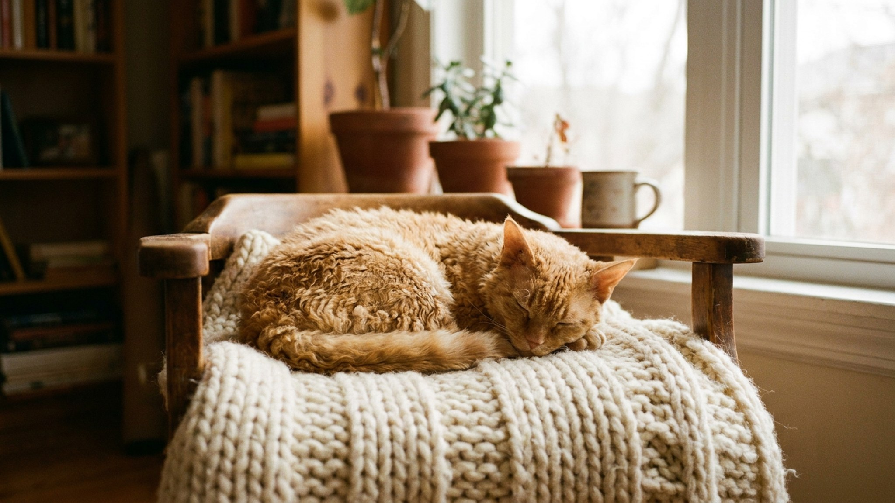

Увидев кудрявую кошку, большинство людей говорит: «о, корниш-рекс!» — и ошибается. Уральский рекс родом из Екатеринбурга, за плечами у него свой рецессивный ген кудрявости, крепкое телосложение и характер, далёкий от нервного темперамента корниша. Ниже — главные отличия породы, уход за шерстью и то, на что смотреть при выборе котёнка.
🐾 У вас уральский рекс?
AnimaLife соберёт уход под породу: к каким болезням есть склонность, что проверять по возрасту, чем кормить и когда пора к врачу. Бесплатно, прямо в мессенджере.
Собрать план ухода → Собрать в MAX →
У вас iPhone? AnimaLife есть в App Store
Уральский рекс появился в СССР в 1988 году: первый кудрявый котёнок родился в Екатеринбурге у обычной домашней кошки. Селекция шла внутри России, порода признана WCF и TICA. Кудрявость обусловлена отдельным рецессивным геном — не тем, что у корниша, и не тем, что у девона. Это важно: скрещивать с ними уральца нельзя, ген другой.
Три главных отличия от «английских» рексов:
Уральский рекс сильно привязывается к хозяину: ходит следом, выбирает одного человека как «своего», но при этом не навязчив. Ему комфортно просто быть рядом — лежать рядом на диване, наблюдать за тем, что делаете. Голос у породы тихий, мяукает редко.
С детьми и другими питомцами уживается хорошо: порода незлобива и не мстительна. Стресс переносит лучше многих восточных пород — перемена обстановки, гости, переезд не выбивают уральца из равновесия так сильно, как, например, корниша или ориентала.
Кудри уральского рекса не требуют стрижки. Вычёсывать нужно деликатно — редкой расчёской или специальной щёткой для вьющейся шерсти, не чаще двух раз в неделю: частые расчёсывания нарушают завиток и делают шерсть пушистой вместо волнистой.
Уральский рекс — редкая порода. Заводчиков в России немного, большинство сосредоточены на Урале и в Москве. Это означает очередь и высокую цену: котёнок с документами стоит от 30 000 рублей.
На что обратить внимание при выборе:
Материал носит информационный характер и не заменяет очную консультацию ветеринара.
🐾 Ваш питомец — уральский рекс?
Заведите профиль в AnimaLife: приложение запомнит породу, возраст и вес и будет подсказывать по уходу именно для неё. Вопросы AI-ветеринару — круглосуточно и бесплатно.
Завести профиль → Завести в MAX →
У вас iPhone? AnimaLife есть в App Store
🐾 Понравился разбор?
Подпишитесь на канал — каждый день разбираем по одному тревожному симптому у кошек и собак: что в пределах нормы, а когда пора к врачу. Подпишитесь, чтобы не пропустить разбор, который может спасти здоровье вашего питомца.